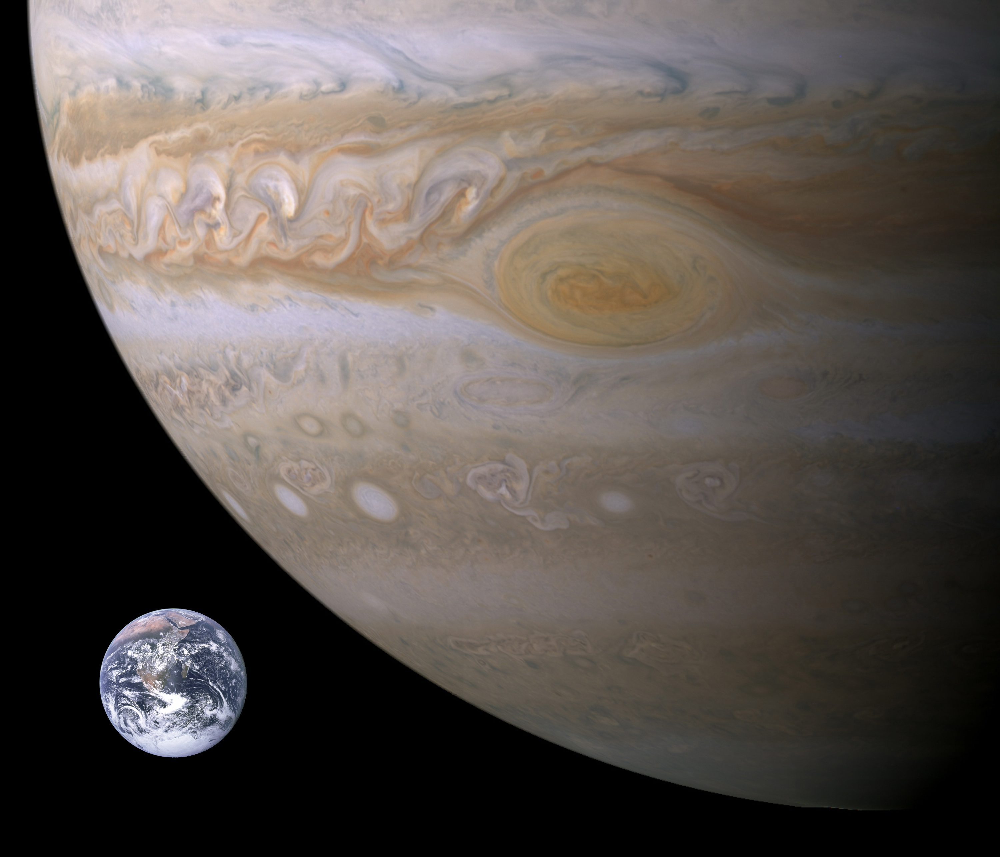
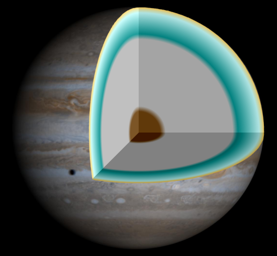
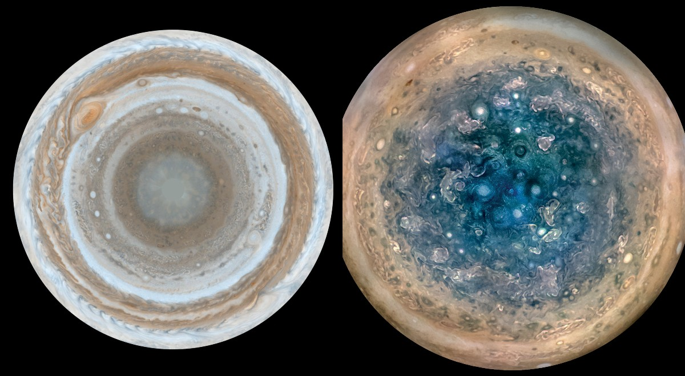
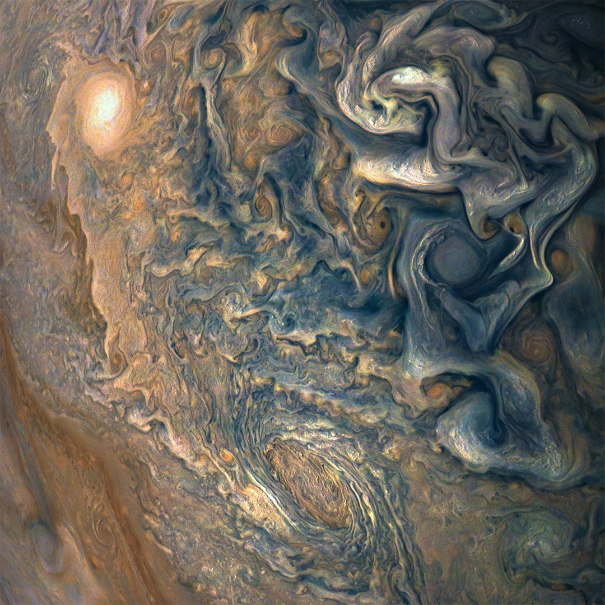
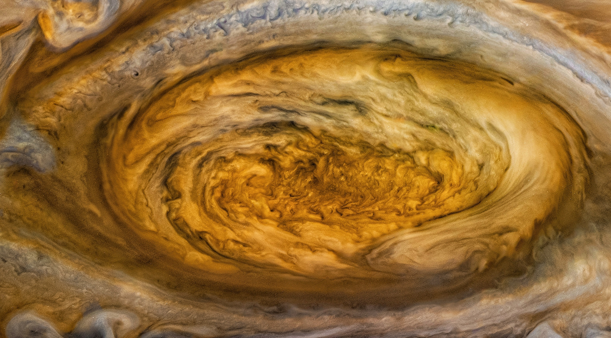

Jupiter este cea mai mare planetă din Sistemul Solar, cu un diametru ecuatorial de 142.984 km, fiind compus în principal din materii gazoase și lichide. Densitatea medie a lui Jupiter, 1.326 g/cm3, este a doua densitate ca mărime printre planetele gigantice, dar mai mică decât densitatea celor patru planete telurice.
Compoziție
Volumul atmosferei lui Jupiter este format din aproximativ 88-92% hidrogen și 8-12% heliu. Atmosfera conține urme de metan, vapori de apă, amoniac și compuși pe bază de siliciu. Un atom de heliu are de aproximativ patru ori mai multă masă decât un atom de hidrogen, astfel încât compoziția calculată în funcție de ponderea de masă a diferitelor substanțe din atmosferă este diferită. Stratul cel mai exterior al atmosferei conține amoniac sub formă de cristale. Există, de asemenea, urme de carbon, etan, hidrogen sulfurat, neon, oxigen, fosfină și sulf. Observațiile în infraroșu și ultraviolet au confirmat prezența unor urme de benzen și alte hidrocarburi.
Proporțiile atmosferice de hidrogen și heliu sunt apropiate de compoziția teoretică a nebuloasei solare primordiale. Reducerea conținutului său poate fi rezultatul condensului și al precipitațiilor de heliu în straturile sale mai profunde. Atmosfera este, de asemenea, puțin mai săracă în heliu - conține aproximativ 80% din compoziția de heliu a Soarelui. Neonul din atmosfera superioară are o concentrație de masă de 20 ppm, ceea ce reprezintă aproximativ o zecime din cea găsită la Soare.
Studiile spectroscopice arată că Saturn are o compoziție similară cu Jupiter, dar celelalte planete gigant, Uranus și Neptun, conțin mult mai puțin hidrogen și heliu și relativ mai multe substanțe volatile.
Masa lui Jupiter este de 2,5 ori mai mare decât masa totală a tuturor celorlalte planete din Sistemul Solar. Este atât de masivă încât baricentrul său cu Soarele (punctul în jurul căruia cele două corpuri se rotesc, centrul de greutate al sistemului) este situat deasupra suprafeței solare, la 1,068 raze solare de centrul astrului. De exemplu, planeta HD 209458 b are o masă de 0,69 MJ, în timp ce Kappa Andromedae b are o masă de 12,8 MJ. O „masă Jupiter” (MJ sau MJUP) este adesea folosită ca unitate pentru determinarea masei altor obiecte, în special a planetelor extrasolare și a piticelor cenușii.
Modelele teoretice indică faptul că, dacă Jupiter ar avea mult mai multă masă decât în prezent, s-ar micșora. Pentru mici modificări de masă, raza nu s-ar schimba în mod apreciabil, iar peste 500 M⊕ (1,6 mase Jupiter) interiorul ar deveni mult mai comprimat sub presiunea crescută, încât volumul său ar scădea în ciuda creșterii cantității de materie. Din acest motiv, se crede că Jupiter este o planetă cu diametrul maxim pe care un corp cu o astfel de compoziție și evoluție îl poate atinge. Procesul de contracție suplimentară pe măsură ce masa crește continuă până când reacțiile de fuziune se aprind, ceea ce poate apărea în cazul unei pitice cenușii cu o masă de aproximativ 50 de mase Jupiter. Unele planete extrasolare au diametre mai mari, dar sunt corpuri mult mai apropiate de stelele lor; dimensiunile mai mari sunt rezultatul unei temperaturi mult mai mari.
Deși Jupiter ar trebui să fie de aproximativ 75 de ori mai masivă pentru a fuziona hidrogenul și a deveni o stea, cea mai mică pitică roșie are o rază cu doar aproximativ 30% mai mare decât Jupiter. În ciuda lipsei reacțiilor termonucleare din interior, Jupiter radiază încă mai multă căldură decât primește de la Soare; cantitatea de căldură produsă în interiorul acesteia este similară cu radiația solară totală pe care o primește. Această radiație suplimentară este generată conform mecanismului Kelvin-Helmholtz prin contracție adiabatică. După formare, Jupiter era mult mai fierbinte și avea aproximativ de două ori diametrul său actual. În urma acestui proces, Jupiter se micșorează cu aproximativ 3 cm pe an.
Structura internă
Se crede că Jupiter este format dintr-un nucleu dens care conține diverse elemente, înconjurat de un strat de hidrogen metalic lichid cu adăugare de heliu, care se extinde spre exterior la aproximativ 78% din raza planetei, și un strat exterior care constă în principal din hidrogen molecular. În afară de acest contur general, structura interioară nu este cunoscută. O posibilă cauză este un impact cu o planetă de aproximativ zece mase de Pământ la câteva milioane de ani după formarea lui Jupiter, care ar fi perturbat un nucleu jovian inițial solid. Misiunea Juno, care a ajuns în iulie 2016, a descoperit că Jupiter are un miez foarte difuz, amestecat în manta.
Deasupra stratului de hidrogen metalic se află o atmosferă interioară transparentă de hidrogen. La această adâncime, presiunea este deasupra presiunii critice a hidrogenului de 1,2858 MPa și temperatura deasupra temperaturii critice de numai 32,938 K. În această stare, nu există o limită clară între diferite faze de hidrogen (lichid, gazos) - se spune că hidrogenul se află într-o stare fluidă supercritică. Este convenabil să tratăm hidrogenul drept gazul care se extinde în jos de la stratul de nor până la o adâncime de aproximativ 1.000 km și ca lichid în straturi mai adânci. Picăturile sub formă de ploaie de heliu și neon se precipită în jos prin atmosfera inferioară, epuizând abundența acestor elemente în atmosfera superioară.
Conform mecanismului Kelvin-Helmholtz, temperatura și presiunea din Jupiter cresc constant. La nivelul presiunii de 10 bari (1 MPa), temperatura este în jur de 340 K (67 °C). În regiunea fază de tranziție în care hidrogenul - încălzit dincolo de punctul său critic - devine metalic, se calculează că temperatura este de 10.000 K (9.700 °C), iar presiunea este de 200 GPa.
Atmosferă
Jupiter are cea mai mare atmosferă planetară din Sistemul Solar, care se întinde pe o altitudine de 5.000 km. Deoarece Jupiter nu are suprafață, baza atmosferei sale este de obicei considerată a fi punctul în care presiunea atmosferică este egală cu 100 kPa.
Straturi de nori
Norii sunt localizați în tropopauză și sunt aranjați în benzi de diferite latitudini, cunoscute sub numele de regiuni tropicale. Interacțiunile acestor structuri provoacă furtuni și turbulențe. Jupiter este acoperit perpetuu cu nori compuși din cristale de amoniac și posibil hidrosulfură de amoniu. Acestea sunt sub-împărțite în zone cu nuanțe mai deschise și centuri mai închise. Viteza vântului în aceste regiuni atinge adesea 100 m/s (360 km/h). S-a observat că zonele variază pe lățime, culoare și intensitate de la an la an, dar au rămas suficient de stabile pentru ca oamenii de știință să le ofere denumiri de identificare.
Stratul de nori are o adâncimea de aproximativ 50 km și constă din cel puțin două punți de nori: o punte inferioară groasă și o regiune mai clară. Acest strat este evidențiat prin sclipiri de fulgere detectate în atmosfera lui Jupiter. Descărcările electrice pot fi de până la o mie de ori mai puternice decât fulgerele de pe Pământ. De asemenea, poate exista un strat subțire de nori de apă care stau la baza stratului de amoniac. Se presupune că norii de apă generează furtuni la fel ca furtunile terestre, conduse de aportul de căldură din interiorul planetei.
Acești compuși colorați, cunoscuți sub numele de cromofori, se amestecă cu puntea de nori mai caldă și inferioară. Zonele luminoase apar când mișcarea în sus în interiorul celulelor convective provoacă cristalizarea amoniacului, ale cărui cristale acoperă norii inferiori. Culoarea portocalie și maro a norilor lui Jupiter este cauzată de compuși care își schimbă culoarea atunci când sunt expuși la lumina ultravioletă de la Soare. Compoziția lor exactă rămâne necunoscută, dar se crede că substanțele sunt: fosfor, sulf și eventual hidrocarburi.
Înclinarea axială scăzută a lui Jupiter înseamnă că polii primesc constant mai puțin radiații solare decât în regiunea ecuatorială a planetei. În același timp, convecția din interiorul planetei transportă mai multă energie către poli, echilibrând temperaturile la nivelul stratului de nori.
Marea Pată Roșie și alte furtuni

Cea mai cunoscută caracteristică a lui Jupiter este Marea Pată Roșie, o furtună anticiclonică persistentă, situată la 22° sud de ecuator, al cărei diametru este mai mare decât diametrul Pământului. Obiectul oval se rotește în sens invers acelor de ceasornic, cu o frecvență de aproximativ șase zile. Furtuna este suficient de mare pentru a fi vizibilă prin telescoapele terestre cu o apertură de 12 cm sau mai mare. Imaginile Telescopului spațial Hubble au arătat până la două „pete roșii” adiacente Marii Pete Roșii. Altitudinea maximă a acestei furtuni este de aproximativ 8 km deasupra norilor din jur. Existența sa este cunoscută încă cel puțin din anul 1831, probabil a fost observată încă din 1665.

Modelele matematice sugerează că furtuna este stabilă și poate fi o caracteristică permanentă a planetei. Marea Pată Roșie este suficient de mare pentru a adăposti Pământul în limitele sale. Cu toate acestea, a scăzut semnificativ în dimensiune de la descoperirea sa. Observațiile Hubble din 1995 au arătat că a scăzut din nou în dimensiuni până la 20.950 km, iar observațiile din 2009 au arătat o dimensiune de 17.910 km. În timpul survolurilor Voyager din 1979, furtuna avea o lungime de 23.300 km și o lățime de aproximativ 13.000 km. În 2020 furtuna avea aproximativ 16.500 km lungime și 10.940 km lățime și scade în lungime cu aproximativ 930 km pe an.
Astfel de furtuni pot dura doar câteva ore sau se pot întinde timp de secole. Furtuni precum acestea sunt comune în atmosfera turbulentă a planetelor gigantice. Jupiter are de asemenea ovale albe și ovale brune, care sunt furtuni fără nume. Ovalele brune sunt mai calde și sunt situate în „stratul normal de nor”. Ovalele albe constau de obicei din nori relativ răcoroși, situați în atmosfera superioară.
Chiar înainte ca misiunea Voyager să demonstreze că Marea Pată Roșie este un sistem de furtuni, au existau dovezi puternice că locul nu putea fi asociat cu vreun fenomen care se petrece adânc pe planetă întrucât Pata se rotește diferit față de restul atmosferei, uneori mai rapid și alteori mai lent.
Ca urmare a contopirii mai multor ovale albe în anul 2000, un fenomen similar cu Marea Pată Roșie s-a format în atmosfera emisferei sudice, dar mai mic. Ovale albe care fac parte din furtună au fost observate pentru prima dată în 1938. Sistemul de furtună nou creat este denumit Oval BA sau Mica Pată Roșie. De la înființare, a crescut în forță și și-a schimbat culoarea de la alb la roșu.
A fost descoperită de cercetătorii de la Very Large Telescope din Chile, care au căutat apoi date arhivate. Au descoperit că, în timp ce Pata își schimbă dimensiunea, forma și intensitatea pe termen scurt, aceasta și-a menținut poziția generală în atmosferă mai mult de 20 ani de date disponibile. Oamenii de știință cred că Pata este un vortex uriaș asemănător cu Marea Pată Roșie și, de asemenea, pare a fi cvasi-stabilă ca și vortexurile din termosfera Pământului. Interacțiunile dintre particulele încărcate generate de Io și câmpul magnetic puternic al planetei au dus probabil la redistribuirea fluxului de căldură, formând Pata. În aprilie 2017, oamenii de știință au raportat descoperirea unui „Mare Punct Rece” în termosfera lui Jupiter, la polul său nord, care are 24.000 km lungime, 12.000 km lățime și cu 200 °C mai rece decât materialul din jur.
Magnetosferă

Câmpul magnetic al lui Jupiter este de paisprezece ori mai puternic decât cel al Pământului, variind de la 4,2 gauss (0,42 mT) la ecuator până la 10-14 gauss (1,0-1,4 mT) la poli, ceea ce îl face cel mai puternic din Sistemul Solar (cu excepția petelor solare).
Se consideră că acest câmp este generat de curenții turbionari - mișcări de rotire a materialelor conductoare - în miezul de hidrogen metalic lichid. Vulcanii de pe satelitul Io emit cantități mari de dioxid de sulf care formează un tor de gaz de-a lungul orbitei satelitului. Electronii derivați din plasma prinsă în magnetosferă (comparați cu centurile Van Allen) ionizează dioxidul de sulf furnizat de activitatea vulcanică pe satelitul Io, formând un nor în formă de tor în jurul planetei. Câmpul, formând o magnetosferă extinsă în afara planetei, oprește particulele ionizate ale vântului solar. Moleculele de hidrogen din atmosfera lui Jupiter sunt de asemenea prinse în magnetosferă. Electronii din magnetosferă generează un zgomot radio care produce emisii în intervalul 0,6-30 MHz.
La o distanță de aproximativ 75 de raze Jupiter de planetă, interacțiunea dintre magnetosferă și vântul solar creează un arc de șoc. Vântul solar interacționează cu aceste regiuni, alungind magnetosfera de pe partea stângă a lui Jupiter și extinzând-o spre exterior până aproape de a ajunge pe orbita lui Saturn. În jurul magnetosferei lui Jupiter se află o magnetopauză. Primii patru sateliți ca mărime ai lui Jupiter orbitează în interiorul magnetosferei, care îi protejează de vântul solar.
Magnetosfera Jupiter este responsabilă pentru episoadele intense de emisie radio din regiunile polare ale planetei. Ca urmare, undele radio sunt generate ca radiații ciclotronice, iar energia este transmisă de-a lungul unei suprafețe în formă de con. Când Pământul traversează acest con, intensitatea undelor radio de la Jupiter poate depăși intensitatea emisiilor solare. Activitatea vulcanică de pe Io injectează gaz în magnetosfera lui Jupiter, producând un torent de particule în jurul planetei.